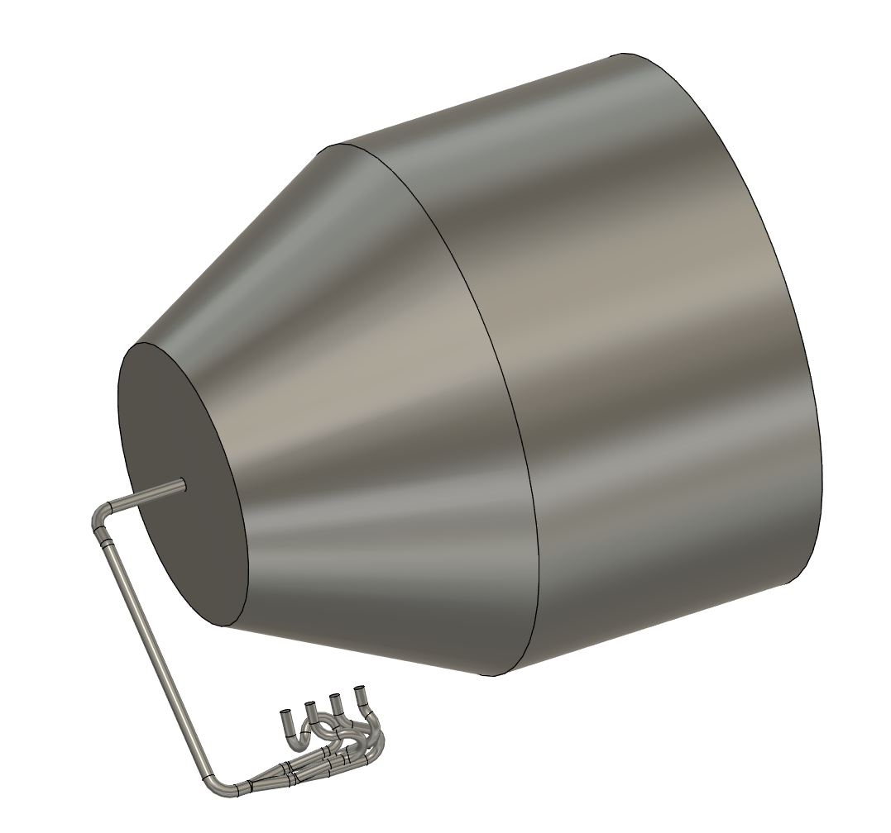
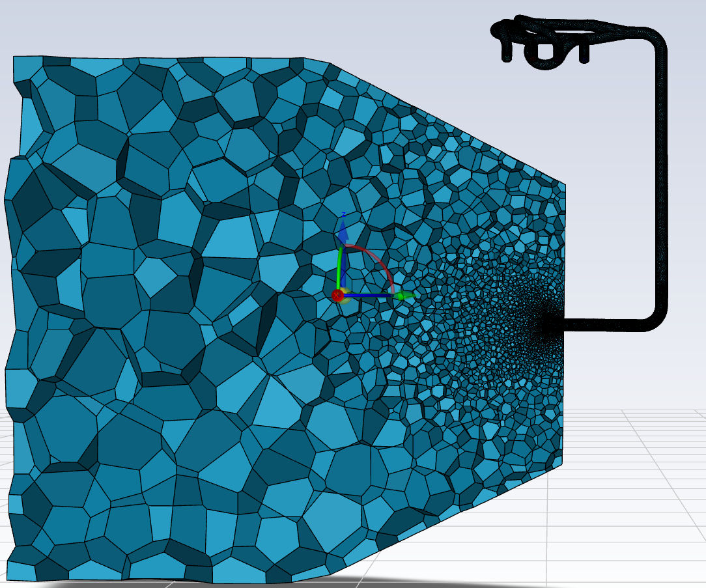
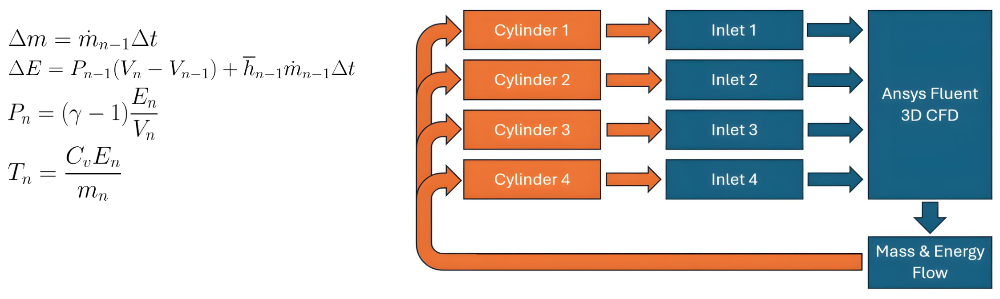
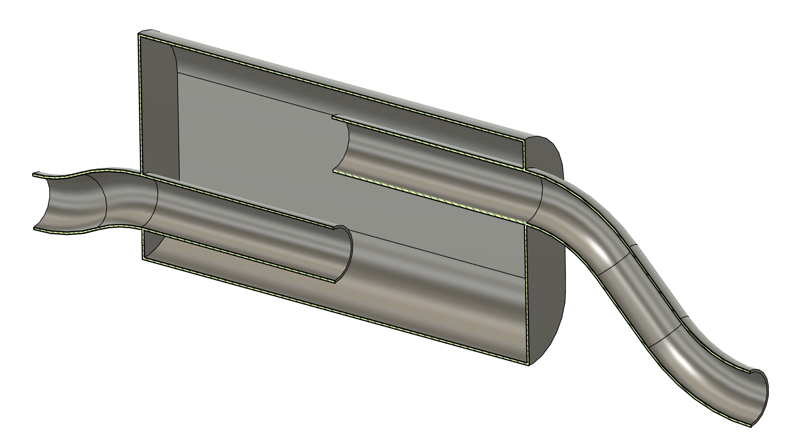
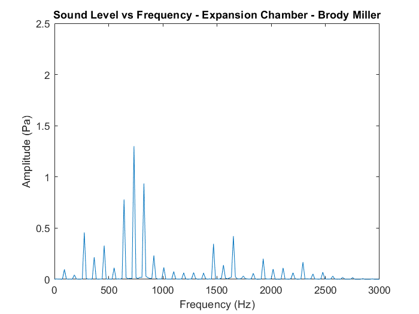
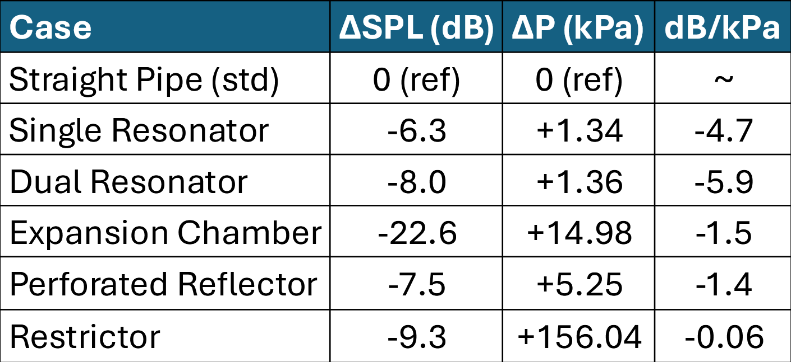

The Oregon Tech FSAE car narrowly met the 110 dB sound limit in 2024 but suffered high backpressure at idle, compromising drivability and engine performance. Based on testing without a muffler, a 16 dB reduction in exhaust noise was required while adding minimal backpressure. Balancing acoustic attenuation with flow restriction drove the need for a performance-driven muffler design study using a high speed transient CFD simulation to allow acoustic analysis.
The general idea for this analysis is that most of the sound energy is produced through the large scale pressure waves from the engine, and relatively little is produced by the turbulence in the flow. This assumption is necessary, as modeling the aeroacoustics of the flow would have required much finer grids and timesteps, resulting in drastically longer computation times. In this case, a URANS formulation is used to solve for how large pressure waves propagate through the exhaust system, while also providing an accurate solution for the bulk flow properties.
The geometry is based on the new header design, based on previous results and information from various academic papers. The internal volume is then connected to a large outlet region. This region surrounds the outlet, extending 2m lengthwize with a 1.5m diameter. This allows for mesh refinementh out to the 0.5m test distance, along with enough room for large cells near the outer surface to dissipate acoustic energy.
An unstructured polyhedral mesh with prism layers capturs the boundary-layer gradients and acoustic wave propagation. Key parameters: 3.5 mm target internal surface size, 20-point circular discretization, 1.1 volume growth rate, and three prism layers tuned for y+ ≈ 100, allowing modeled boundary layers to achieve accurate results. The mesh ranged from 200k to 450k cells depending on design complexity, with coarse cells up to 0.25m in the outlet region to dissipate sound emissions. Mesh independence was verified for backpressure and exhaust recycling changed by <2% when refining mesh size. SPL was slightly higher with the finer mesh, adding ~2.5 dB due to some high-frequency attenuation in the standard mesh.
The simulation was performed with the k–e turbulence model to resolve freestream tubulent interactions for flow restriction. The ideal gas law represented stoichiometric exhaust, with adiabatic no-slip walls. A fixed time step of 10 microseconds was chosen to resolve harmonics up to ~50 kHz and ensure numerical stability. Simulations ran until periodic behavior was present, then for five engine cycles at 11,000 RPM (~0.0545 s) to collect time-averaged behavior. To estimate time step convergence, criteria of 1×10⁻⁴ on all residuals, ±0.001 kg/s on mass flow, and 0.1 Pa on acoustic pressure were required for time step completion.
A scheme script was used to impose time-varying cylinder pressure at the inlet, using boundary flows rates to calculate the cylinder pressure at each timestep. When the exhaust valve was closed, the inlet switched to a stationary wall boundary, accurately capturing acoustic source timing without the complexity of moving-mesh models.
Design idea: Baseline stock geometry without modifications.
Results: SPL = 125.7 dB; ΔP = 49.15 kPa; recycled = 2.88%.
Design idea: 179 mm resonator tuned to the highest amplitude 734 Hz eighth harmonic, placed at a calculated pressure antinode.
Results: SPL = 119.4 dB (–6.3 dB); ΔP = 50.49 kPa (+1.34 kPa); recycled = 2.79%.
Design idea: Added a second resonator (491 mm) targeting the 275 Hz third harmonic, placed at a calculated pressure antinode.
Results: SPL = 117.7 dB (–8.0 dB); ΔP = 50.51 kPa (+1.36 kPa); recycled = 2.81%.
Design idea: Large chamber without a direct inlet-outlet path for broadband attenuation via multiple reflections.
Results: SPL = 103.1 dB (–22.6 dB); ΔP = 64.13 kPa (+14.98 kPa); recycled = 3.30%.
Please note the different scale due to the significant sound reduction.
 Design idea: Angled perforated panel designed to reflect ~66% of acoustic energy.
Results: SPL = 118.2 dB (–7.5 dB); ΔP = 54.40 kPa (+5.25 kPa); recycled = 2.63%.
Design idea: Halved outlet diameter to mimic baffles used last year, acting as a flow-restrictor.
Results: SPL = 116.4 dB (–9.3 dB); ΔP = 205.19 kPa (+156.04 kPa); recycled = 6.31%.
Resonator configurations offered 6–8 dB noise reduction for only ~1.3 kPa backpressure penalty (~5–6 dB/kPa). The expansion chamber achieved the largest attenuation (–22.6 dB) but at a significant cost (+15 kPa), while the perforated reflector balanced moderate attenuation with acceptable flow restriction. The simple restrictor, though effective for noise, induced prohibitive backpressure as expected.
A hybrid solution, tuned quarter-wave resonators for the dominant engine harmonics paired with a compact expansion chamber for broadband suppression should deliver well over 16 dB of attenuation with significantly less backpressure than previous years. Future teams should be able to use this analysis to inform a custom muffler design. Additionally, the CFD methodology and custom boundary conditions provide a robust framework for future exhaust acoustic optimizations.
Project Summary Presentation